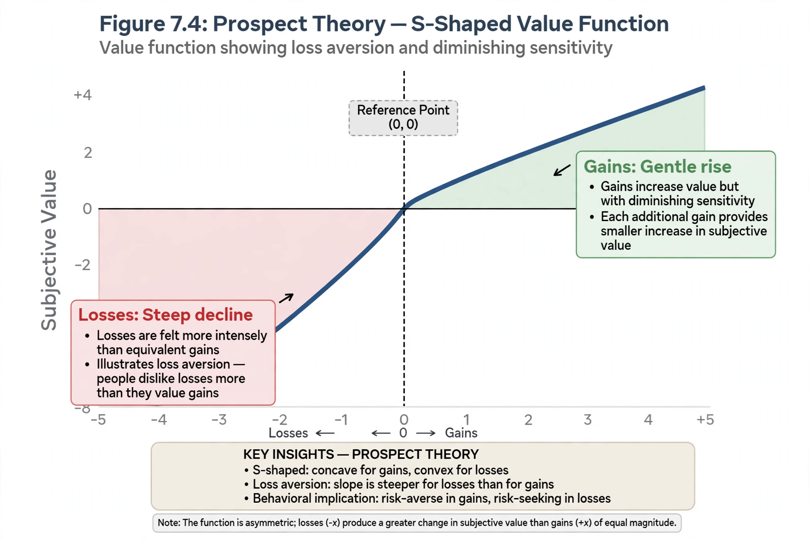

| Field | Behavioral economics, cognitive psychology |
|---|---|
| Introduced by | Daniel Kahneman and Amos Tversky (1979) |
| Framework | Prospect theory |
| Typical estimate | Losses weigh about twice gains (λ ≈ 2) |

Loss aversion is a psychological and economic concept in which losses are perceived as psychologically more powerful than equivalent gains — "losses loom larger than gains." Losing $100, for example, produces more unhappiness than the happiness produced by gaining $100. The concept was introduced by Daniel Kahneman and Amos Tversky as a central component of prospect theory (1979), a descriptive alternative to the expected utility hypothesis.
In prospect theory, outcomes are evaluated relative to a reference point rather than as absolute wealth. The value function is concave for gains (risk aversion), convex for losses (risk seeking), and steeper for losses than for gains. Tversky and Kahneman (1992) estimated the loss-aversion coefficient at about 2.25, meaning losses hurt roughly twice as much as equivalent gains please.
Loss aversion helps explain the endowment effect (people demand more to give up an object than they would pay to acquire it), the status quo bias, and the disposition effect in investing, where investors hold losing stocks too long while selling winners too early. Neuroimaging studies suggest the amygdala plays a role in loss-related responses.
Some researchers have questioned the universality and magnitude of loss aversion, noting that it shrinks or disappears for small stakes, among experienced market traders, and under certain experimental designs. Kahneman himself acknowledged that loss aversion does not apply to routine small losses treated as costs.
From Wikipedia, the free encyclopedia. Recreated from memory.